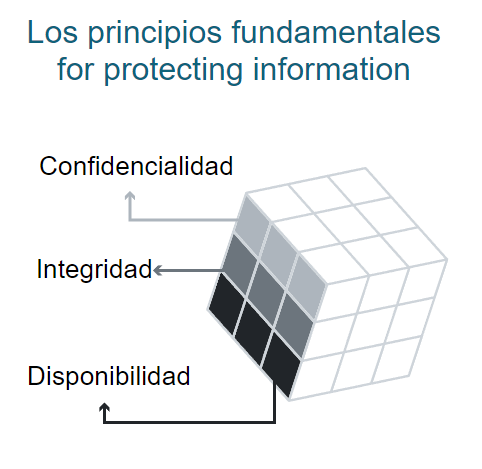
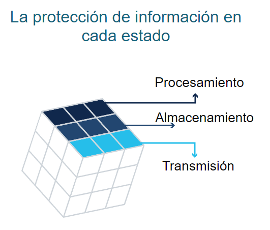
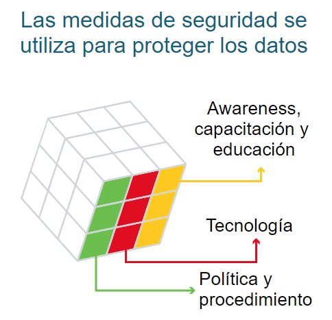

Estrategias de seguridad

Estrategias de seguridad de información
Noviembre 24, 2024 publicado por Ana María Zapata
La seguridad de la información es un tema cada vez más importante en la era digital. Con la cantidad de datos personales y confidenciales que se comparten en línea, es crucial protegerlos contra amenazas como el robo de identidad, la piratería informática y la violación de datos. En esta entrada, exploraremos algunas estrategias de seguridad de información que pueden ayudar a proteger los datos y mantener la información segura.
El cubo McCumber
Para entrar en materia, se considera relevante mencionar el marco de seguridad de la información denominado "McCumber Cube" por su creador John McCumber, quien lo concibió en 1991 mientras trabajaba para el Instituto Nacional de Estándares y Tecnología (NIST) de Estados Unidos. Su propósito es ayudar a las organizaciones a evaluar y establecer iniciativas de seguridad de la información y ofrecer una forma integral y efectiva para abordar los desafíos de seguridad de la información en la modernidad.
Dimensiones del Cubo de McCumber
Combina tres dimensiones fundamentales para abordar la protección de los datos de manera integral y cada dimensión abarca diferentes aspectos críticos, lo que permite identificar y mitigar riesgos en los sistemas de información.
Los principios fundamentales para proteger los sistemas de información
Define los tres objetivos esenciales de la seguridad:
Confidencialidad: Garantizar que la información sea accesible solo por personas autorizadas.
Integridad: Asegurar que los datos no sean alterados de forma no autorizada.
Disponibilidad: Garantizar que los datos estén accesibles cuando sean necesarios.
A continuación; se presenta una ilustración correspondiente a la dimension que acabamos de describir:
La protección de la información en cada uno de sus estados posibles
Describe cómo y dónde los datos existen dentro de un sistema:
En almacenamiento: Datos en reposo, como en discos duros o bases de datos.
En tránsito: Datos en movimiento a través de redes o sistemas de comunicación.
En procesamiento: Datos utilizados por aplicaciones o sistemas.
Más abajo; se presenta una ilustración correspondiente a la dimension que acabamos de describir:
Las medidas de seguridad utilizadas para proteger los datos.
Establece las estrategias y herramientas necesarias:
Tecnología: Herramientas como cifrado, cortafuegos y sistemas de detección de intrusiones.
Políticas: Normativas y regulaciones que guían el uso y acceso a la información.
Factores humanos: Educación y entrenamiento del personal para prevenir errores humanos y garantizar el cumplimiento de las políticas.
Más abajo; se presenta una ilustración correspondiente a la dimension que acabamos de describir:
Principios del Cubo de McCumber
El marco no solo describe estas dimensiones, sino que también busca la intersección entre ellas para garantizar una estrategia de seguridad equilibrada. Por ejemplo:
Una política de confidencialidad debe aplicarse a datos almacenados utilizando tecnología de cifrado.
La disponibilidad debe ser asegurada mediante políticas de recuperación ante desastres y medidas tecnológicas como sistemas redundantes.
Aplicaciones prácticas
El Cubo de McCumber permite evaluar sistemas existentes o diseñar nuevos sistemas de seguridad considerando todas las combinaciones de sus dimensiones. Esto asegura que no se pasen por alto posibles vulnerabilidades.
Una vez descrito el marco de seguridad de la información base para la identificación de criterios a tener en cuenta en la definición de estrategias de seguridad clave, podemos continuar con la especificación de los mismos.
Criterios clave para estrategias de seguridad
Para definir estrategias de seguridad enfocadas en bases de datos, es esencial considerar una serie de criterios clave que permitan garantizar la confidencialidad, integridad y disponibilidad de la información. A continuación, se detallan los criterios más importantes, su nivel de importancia y ejemplos de estrategias aplicables (este apartado da respuesta a la pregunta "¿Qué criterios se deben tener en cuenta para establecer estrategias de seguridad?").
Confidencialidad
Consiste en garantizar que solo personas autorizadas accedan a los datos sensibles, presenta un nivel de importancia crítico, ya que una violación de confidencialidad puede resultar en pérdidas financieras y reputacionales severas.
Las estrategias recomendadas para garantizar la confidencialidad incluyen:
Implementar controles de acceso basados en roles (RBAC).
Cifrar datos en reposo y en tránsito.
Usar autenticación multifactor (MFA) para proteger el acceso.
Integridad
Busca garantizar que los datos no sean alterados o manipulados sin autorización, presenta un nivel de importancia alto, especialmente en industrias reguladas como finanzas y salud.
Las estrategias recomendadas para garantizar la integridad incluyen:
Configurar registros de auditoría para monitorear cambios en los datos.
Implementar validación de datos mediante mecanismos como checksums o firmas digitales.
Realizar pruebas regulares para detectar manipulaciones.
Disponibilidad
Su propósito es asegurar que los datos estén accesibles cuando se necesiten, incluso en caso de incidentes, presenta un nivel de importancia catalogado como fundamental para operaciones críticas.
Las estrategias recomendadas para garantizar la disponibilidad incluyen:
Implementar soluciones de respaldo y recuperación automatizadas.
Usar sistemas de alta disponibilidad (HA) y balanceadores de carga.
Desarrollar planes de recuperación ante desastres (DRP).
Auditoría y monitoreo
Consiste en supervisar constantemente las actividades en las bases de datos para identificar actividades sospechosas, presenta un nivel de importancia moderado, pero clave para detectar y responder a incidentes en tiempo real.
Las estrategias recomendadas para el criterio de audtoría y monitoreo incluyen:
Configurar herramientas de monitoreo tales como un Sistema de correlación de eventos de seguridad (SIEM) para registrar eventos.
Establecer alertas automáticas para actividades fuera de lo común.
Revisar periódicamente registros de acceso.
Cumplimiento normativo
Consiste en asegurarse de que las prácticas de seguridad cumplan con las regulaciones locales e internacionales, presenta un nivel de importancia alto, ya que el incumplimiento puede conllevar multas y sanciones.
Las estrategias recomendadas para el criterio de cumplimiento normativo incluyen:
Adaptar políticas según estándares como GDPR, HIPAA o PCI DSS.
Realizar auditorías regulares para evaluar el cumplimiento.
Usar herramientas que faciliten la conformidad automatizada.
Los criterios mencionados permiten definir un conjunto sólido de estrategias de seguridad aplicables a cualquier organización, independientemente de su tamaño o complejidad.
Fuentes consultadas
(incluye recursos de recuperación de imágenes)
- Astera - Tehreem Naeem, 2024 - ¿Qué es la integridad de datos en una base de datos? ¿Por qué lo necesitas?
- Alex Millá, 2023 - McCumber Cube (El cubo)
- Universidad de Michigan - Introduction to Cybersecurity: What Beginners Need to Know
- NIST, 2024 - The NIST Cybersecurity Framework (CSF) 2.0
- Agencia de defensa de Estados unidos de América - Cybersecurity Best Practices
- NIST, 2020 - Security and Privacy Controls for Information Systems and Organizations
- Agencia de defensa de Estados unidos de América - Information Technology Sector
Rebobinar entrada